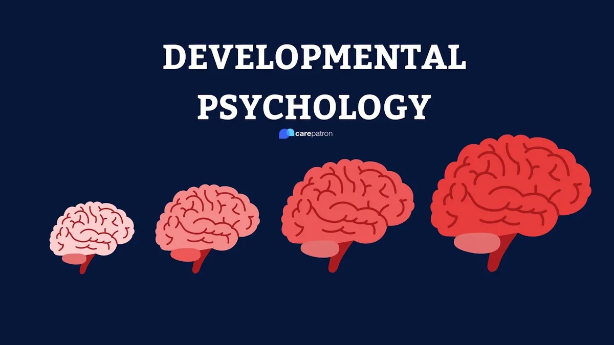
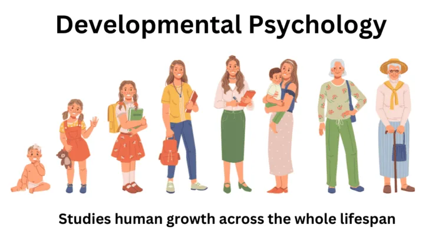
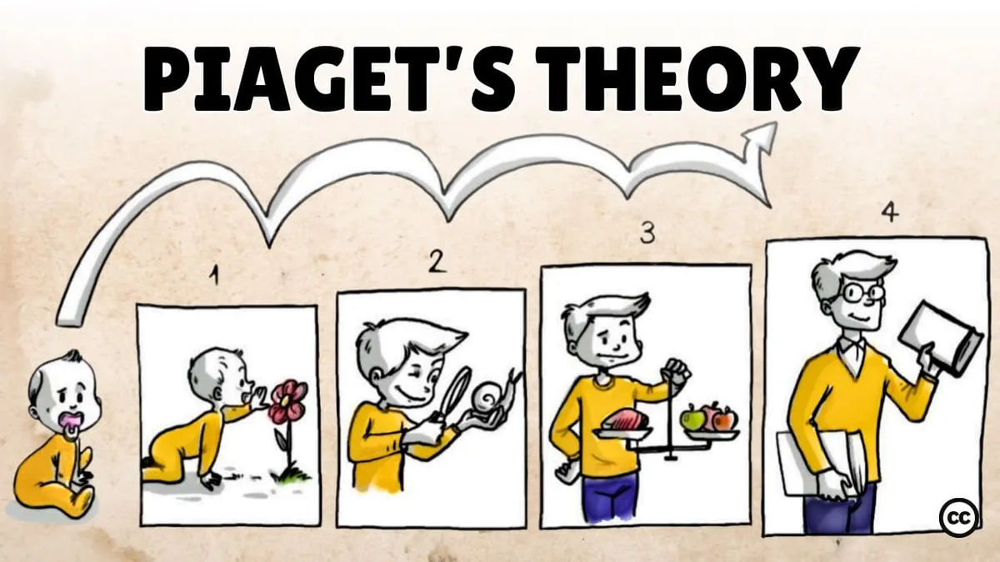
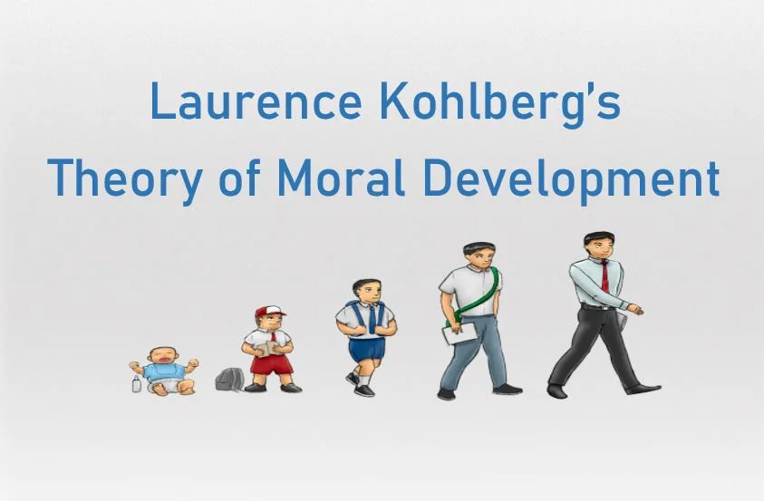
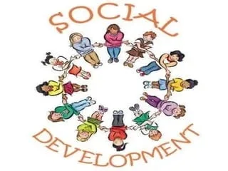

Expanded Nursing Uganda Explanation
Development should be reviewed through safe maternal and newborn assessment, early recognition of danger signs, respectful communication and timely referral. Connect the definition to vital signs, bleeding, fetal or newborn wellbeing, patient education and local protocol requirements.
01 Growth and Development in Adolescents
These changes are influenced by hormones and genetics.
These changes are influenced by a combination of biological, psychological, and social factors
Biological, psychological, and cognitive changes that commence in puberty and persist throughout adolescence significantly impact nutritional status and nutrient needs. Adolescents undergo physical growth and development during puberty, increasing their requirements for energy, protein, vitamins, and minerals.
Concurrently, they experience notable changes in their ability to assess information, seek independence, and become unique individuals. The heightened need for energy and nutrients, coupled with increasing financial independence, autonomy in food choices, and immature cognitive abilities, places adolescents in potentially distressing and costly situations with long-lasting repercussions.
Changes during Adolescence
Physical Changes
1. Growth of Reproductive Organs : Primary and secondary sex characteristics mark the physical changes, with adolescence transitioning from childhood to physical maturity.
- Primary Sex Characteristics :
- In girls , the onset of the menstrual period.
- In boys , enlargement of the penis and testicles, accompanied by sperm production.
- Secondary Sex Characteristics:
- Girls : Breast development, pubic hair growth, hip fat deposition, voice softening, changes in body image, weight gain, and height increase.
- Boys : Voice deepening, facial and body hair growth, penile enlargement, erections, changes in body image, weight gain, and height increase.
2. Physiological Changes :
- Girls: Menstruation (menarche), acne, smooth skin appearance, and voice softening.
- Boys: Wet dreams, sperm production, decreased dependence on family, voice changes, and Adam’s apple development.
3. Psychological/Emotional Changes:
- Self-awareness of sexual needs.
- Interest in the opposite sex.
- Potential resistance, disobedience, hostility, and mood swings.
4. Sexual Changes:
- Awakening of sexual arousal.
- Masturbation.
- Attraction to the opposite/same sex, leading to behavioral changes.
5. Behaviour Changes :
- Formation of peer groups.
- Independence from family.
- Habit formation, including peer group associations, with possible involvement in activities like smoking and alcohol ingestion.
02 Adolescents’ Reactions to Change and Behaviours
- Adolescents Adults
- Anxiety Overprotection
- Shyness Anxiety
- Depression Judgmental attitudes
03 Misconceptions/Myths Associated with Growth and Development
Females:
- Girls with big buttocks are presumed to be highly sexually active.
- The notion that smaller breasts are more desirable.
- Belief that engaging in sex can alleviate menstrual cramps.
- Incorrect association of menstrual cramps with infertility.
- Misunderstanding that the vagina is hollow, suggesting things can disappear in it.
- Girls can supposedly only get pregnant after a year of menstruation.
- Reliance on safe days as a contraception method.
- The misconception that girls with thin hips are considered more attractive.
- False belief that menstrual flow is unhygienic and results in unpleasant odors.
- Uncircumcised girls are thought to be restless and sexually aroused all the time.
- Girls starting menstruation are mistakenly assumed to have engaged in sexual intercourse.
- The belief that hip enlargement is solely due to sexual activity.
- False notion that menstrual flow leads to the loss of virginity (hymen).
- Girls with small breasts are incorrectly assumed to lack sufficient milk to feed their babies.
- Girls are perceived as never children; they are considered mature at any stage.
- Breasts are believed to enlarge when touched by men.
- A girl who does not give birth is compared to a mule with an arid womb.
- During the rainy season, it is wrongly believed that every woman becomes fertile.
- The idea that one should have children at a very young age.
- False belief that sexual intercourse helps in treating skin issues such as spots and pimples.
Males :
- The misconception that a larger penis is better.
- Belief that an erection implies the necessity for sexual activity.
- Boys not growing beards are considered not yet men.
- The misconception that only boys with hairy chests are considered attractive.
- Girls are believed to be attracted only to tall, masculine boys.
- Boys are thought to be capable of making girls pregnant only at the age of 18 years.
- Boys with big toes are falsely believed to have a large penis.
04 Problems Faced by Adolescents as a Result of Body Changes
- Adolescents are confronted with societal expectations , including the pressure to exhibit adult behaviour, such as specific clothing choices and maintaining a high standard of living.
- Emancipation from home becomes a challenge, coming from restrictions on activities like going out with members of the opposite sex, handling money, and coming home late. Adolescents may perceive these restrictions as excessive parental control.
- Relationships with peer groups become crucial for adolescents, and they may continue to value their group even if they face exclusion or rejection at home.
- Girls encounter various menstrual-related issues , acne problems, excessive sweating, vaginal discharge concerns, and changes in body size and shape during adolescence.
- Boys experience challenges such as wet dreams , frequent erections, and notable changes in body size and shape.
05 Solutions to the Problems
- Promote Open Communication : Encourage parents and guardians to engage in open and honest communication with adolescents to better understand their concerns and perspectives.
- Provide Comprehensive Education : Implement educational programs in schools that address not only the physical changes but also the emotional and psychological aspects of adolescence.
- Foster Supportive Peer Environments : Create a supportive atmosphere within peer groups and schools to help adolescents navigate challenges collectively.
- Offer Counseling Services : Establish accessible counselling services for adolescents to discuss their concerns, both related to body changes and broader life issues.
- Parental Guidance Workshops : Conduct workshops for parents to equip them with effective strategies for guiding adolescents through this transitional phase.
- Encourage Healthy Body Image : Promote positive body image through awareness campaigns to help adolescents accept and embrace their changing bodies.
- Flexible Parental Boundaries : Advocate for balanced parental boundaries that allow for independence while maintaining necessary guidelines to ensure safety.
- Incorporate Life Skills Education : Integrate life skills education into the curriculum, covering topics such as decision-making, communication, and conflict resolution.
- Community Involvement : Involve the community in supporting adolescents, fostering understanding, and creating an environment conducive to their healthy development.
- Accessible Health Resources : Ensure adolescents have access to health resources, including information about menstrual health, reproductive well-being, and mental health support.
06 Developmental Stages of Adolescents
- Early Adolescence (Approximately 10-14 years of age) Middle Adolescence (Approximately 15-16 years) Late Adolescence (Approximately 17-19 years)
- Movement Toward Independence: Movement Toward Independence: Movement Toward Independence:
- – Struggle with identity. – Self-involvement, alternating between high expectations and poor self-concept. – Firmer identity.
- – Moodiness. – Complaints of parental interference. – Ability to delay gratification.
- – Improved speech expression. – Strong concern with appearance and body. – Ability to think ideas through and express them.
- – Expression of feelings through action. – Lowered opinion of parents, withdrawal. – Developed sense of humor.
- – Growing importance of close friendships. – Effort to make new friends. – Stable interests.
- – Less attention to parents, occasional rudeness. – Emphasis on the new peer group. – Greater emotional stability.
- – Realization of parents’ imperfections. – Periods of sadness due to psychological loss of parents. – Ability to make independent decisions.
- – Search for new relationships. – Examination of inner experiences. – Ability to compromise.
- – Return to childish behavior. – Pride in one’s work.
- – Peer group influences interests and clothing. – Self-reliance.
- – Greater concern for others.
- Future Interests and Cognitive Development: Future Interests and Cognitive Development: Future Interests and Cognitive Development:
- – Increasing career interests. – Intellectual interests gain importance. – More defined work habits.
- – Mostly interested in present and near future. – Sexual and aggressive energies directed into creative and career interests. – Higher concern for the future.
- – Greater ability to work. – Thoughts about one’s role in life.
- Sexuality: Sexuality: Sexuality:
- – Girls ahead in development. – Concerns about sexual attractiveness. – Concerned with serious relationships.
- – Shyness, blushing, modesty. – Frequently changing relationships. – Clear sexual identity.
- – Experimentation with body (masturbation). – Exploration of heterosexuality with fears of homosexuality. – Capacities for tender and sensual love.
- – Worries about normalcy. – Tenderness and fears toward opposite sex.
- – Feelings of love and passion.
- Ethics and Self-Direction: Ethics and Self-Direction: Ethics and Self-Direction:
- – Rule and limit testing. – Development of ideals and role models. – Capable of useful insight.
- – Occasional experimentation with substances. – Consistent evidence of conscience. – Stress on personal dignity and self-esteem.
- – Capacity for abstract thought. – Greater capacity for setting goals. – Ability to set goals and follow through.
- – Interest in moral reasoning. – Acceptance of social institutions and cultural traditions.
- – Self-regulation of self-esteem.
- Physical Changes: Physical Changes: Physical Changes:
- – Height and weight gains. – Continued height and weight gains. – Most girls fully developed.
- – Growth of pubic and underarm hair. – Growth of pubic and underarm hair. – Boys continue to gain height, weight, muscle mass, body hair.
- – Increased body sweat. – Increased body sweat.
- – Changes in skin and hair. – Changes in skin and hair.
- – Breast development and menstruation in girls. – Breast development and menstruation in girls.
- – Growth of testicles and penis in boys. – Growth of testicles and penis in boys.
- – Nocturnal emissions (wet dreams). – Nocturnal emissions (wet dreams).
- – Deepening of voice. – Deepening of voice.
- – Growth of facial hair in boys. – Growth of facial hair in boys.
07 Nursing Uganda Clinical Lens
Use Development as a practical nursing topic, not only a memorized definition. Start with normal structure and function, then connect it to assessment findings and disease.
- What to understand first: define development, identify the normal or expected pattern, then explain what changes when the patient is unwell.
- Why it matters in care: the nurse must recognize risk early, explain findings clearly, document accurately and know when to escalate.
- How to revise it: connect each point to assessment, nursing diagnosis or care problem, intervention, rationale and evaluation.
08 Assessment Guide
- Relevant inspection, palpation, movement, auscultation, vital signs or neurological checks.
- Normal findings, abnormal findings and what each abnormality may indicate.
- Patient history, risk factors and how the body system affects other systems.
09 Nursing Priorities, Rationales and Outcomes
- Use anatomy to explain symptoms and guide focused assessment.
- Recognize findings that need urgent escalation.
- Teach the patient using simple body-system language.
The rationale for these priorities is patient safety: nursing actions should prevent deterioration, reduce discomfort, support recovery and create clear evidence for the next caregiver.
- Expected outcome: The learner can explain normal function, identify abnormal signs and connect them to nursing action.
10 Patient Teaching and Revision Check
- Explain development in simple language the patient or caregiver can repeat back.
- Teach warning signs, medicine or follow-up instructions, hygiene or lifestyle points where relevant.
- For exams, prepare a short answer using: definition, causes or risk factors, signs, assessment, management, complications and prevention.
- For ward practice, document baseline findings, actions taken, patient response and the plan for review.
Illustrations and Diagrams (8)







Related Video Lectures
Watch nursing lecture videos on YouTube for this topic. Opens in a new tab.
Watch on YouTubeExternal link: YouTube may use its own cookies and terms. Nursing Uganda is not affiliated with YouTube.